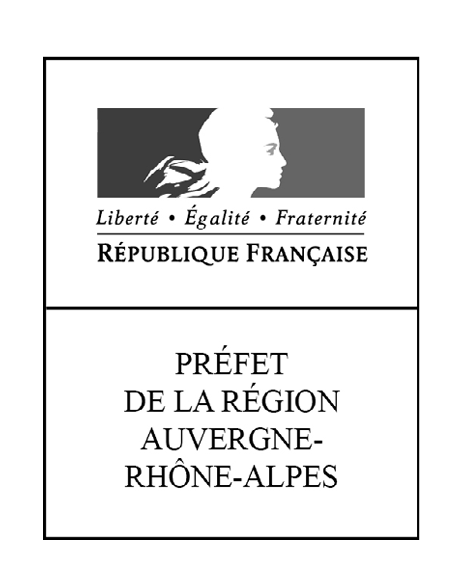
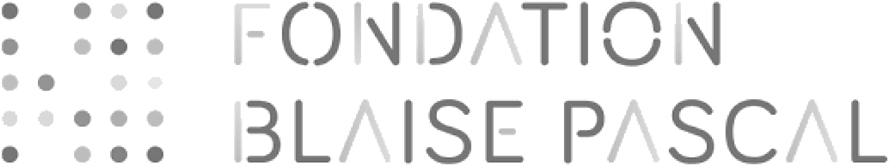
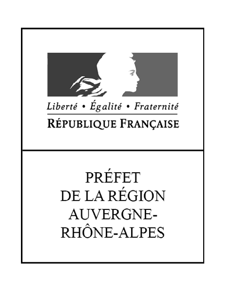
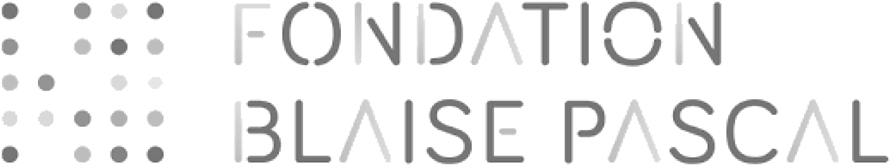

À propos
Imaginé par Grame et Réseau Canopé, AmStramGrame est un projet pédagogique arts & sciences réunissant ateliers et outils à destination de la communauté éducative permettant une mise en application concrète de concepts scientifiques parfois abstraits en utilisant la création sonore et la programmation informatique comme vecteurs.
Le projet s'appuie sur le langage de programmation Faust créé et développé par Grame depuis 15 ans et reconnu comme un standard dans le domaine du traitement du signal en temps réel pour l'audio. Ainsi le projet Am Stram Grame comprend :
- Une plateforme web (ce site, en occurrence) intégrant un espace créatif de programmation informatique pour apprendre à construire son propre instrument de musique en ligne, des scenarii pédagogiques téléchargeables, des partitions prêtes-à-l'emploi et une offre de formation à destination des enseignants (Éducation nationale, écoles de musiques, conservatoires, etc.).
- Des mallettes d'expérimentation contenant des Gramophones permettant de rendre tangibles les paramètres virtuels d’un programme informatique sur la synthèse de son.
- Des ateliers avec des artistes pluridisciplinaires.
Le public
Projet adapté à toutes les disciplines (ex. mathématiques, physique, technologie, musique, français, EPS, etc.), à tous les niveaux d'âge (du cycle primaire au secondaire) et accessible aussi bien aux élèves inscrits dans un parcours d'enseignement musical, qu'à ceux sans aucun enseignement artistique.
Les ateliers
En classe, les ateliers sont menés conjointement par un médiateur pédagogique Canopé et un artiste/scientifique Grame. Ils sont basés sur des scénarii pédagogiques courts et modulables, préalablement élaborés par les partenaires en lien avec les programmes scolaires. Chaque scénario a une approche soit artistique, soit scientifique, soit les deux. Le projet nécessite l'utilisation d'ordinateurs pour accéder au site web AmStramGrame, qui permet de construire des instruments de musique en ligne, avec quelques lignes de code, et de programmer les gramophones/smartphones. Les élèves expérimentent ensuite le contrôle gestuel de leurs instruments et imaginent des situations (performances musicales ou dansées, installations) en lien avec la lutherie numérique créée.
Les partenaires
AmStramGrame a été imaginé par Grame, Centre national de création musicale, en partenariat avec Canopé, Réseau de création et d'accompagnement pédagogiques.
Avec le soutien de ses partenaires publics et mécènes :
 



ainsi que des ses lieux partenaires :
- École Lurcy-Lévis (03)
- École St Plaisir (03)
- École Le Veurdre (03)
- École Saint-Yorre (03)
- École Le Vernet (03)
- École Ferrières Sur Sichon (03)
- École Jean Moulin, Moulins (03)
- École Voltaire, Montluçon (03)
- École de Musique Jean Wiener, Vénissieux (69)
- Collège André Boutry, Lurcy-Lévis (03)
- Collège Pablo Picasso, Bron (69)
- Collège Théodore Monod, Bron (69)
- Collège des Deux Vallées, Le Cheylard (07)
- Collège Sacré Coeur, Dunières (43)
- Lycée général et technologique, Le Cheylard (07)
- Lycée des Chartreux, Lyon (69)
- Médiathèque, Chambon-sur-Lignon (43)